5. Electronics production
This week I worked on defining my final project idea and started to getting used to the documentation process.
Group assignment:
characterize the design rules for your PCB production process
https://mods.cba.mit.edu/
traces interior 1/64" 0.010" fiber laser
PCB production with Roland MonoFab SRM-20 milling machine
Roland MonoFab SRM-20 is rather small desktop CNC milling machine. It is general purpose milling machine which means it is not the best one for the special purposes like PCB milling though. Anyhow, it could do rather nice PCB milling on cases where PCB size is not very large, single side PCB is enough and traces needed are relatively large. It is also quite slow compared to milling machines that are made just for the PCB milling.
On the lab I did that "linetest" using Roland MonoFab SRM-20. Toolpath traces were generated with "Mods" tool https://mods.cba.mit.edu/
| 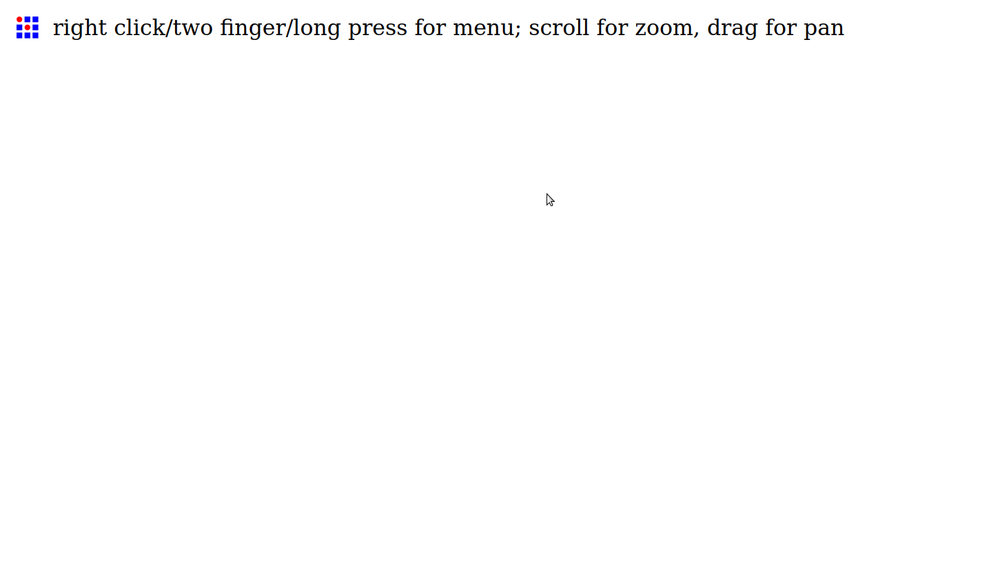 |
|---|
| Empty workbench. https://mods.cba.mit.edu/ |
| 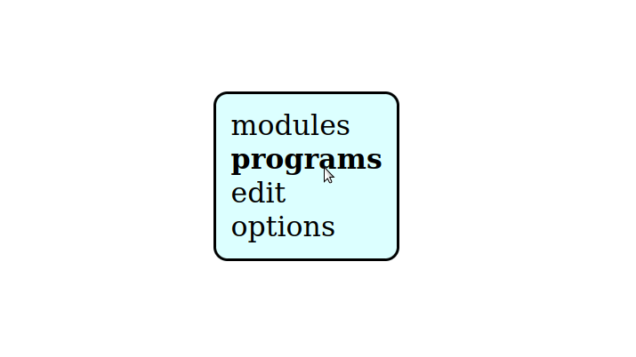 |
|---|
| Select "programs" |
| 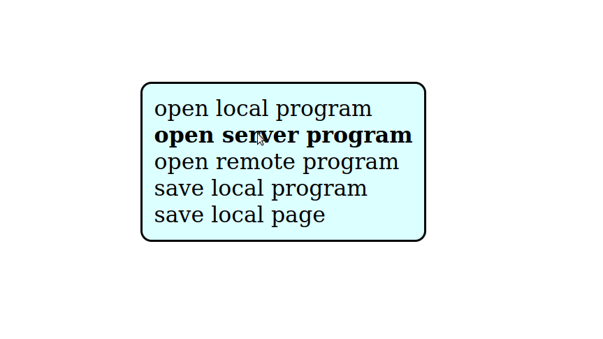 |
|---|
| Select "open server program" |
| 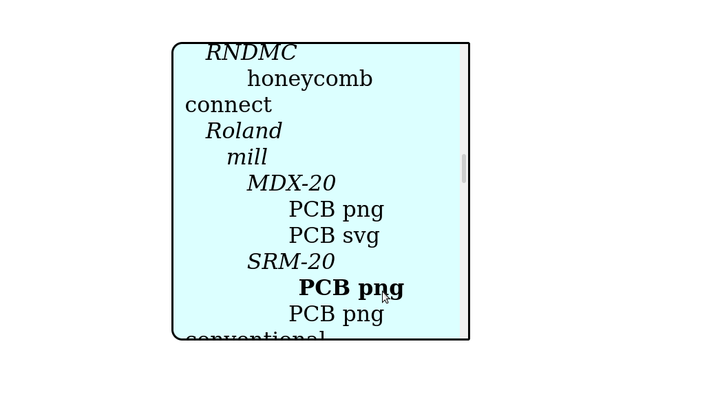 |
|---|
| Select "machines->Roland->mill->SRM-20->PCB png" |
| 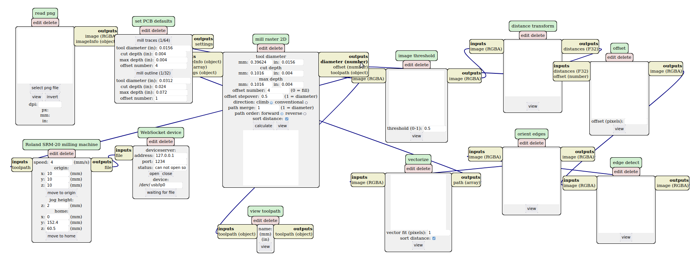 |
|---|
| Milling design tool main view |
| 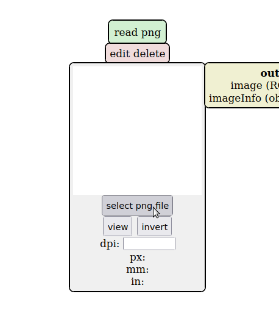 |
|---|
| Select "select png file" |
| 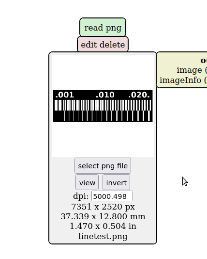 |
|---|
| "linetest.png" file selected from computer |
| 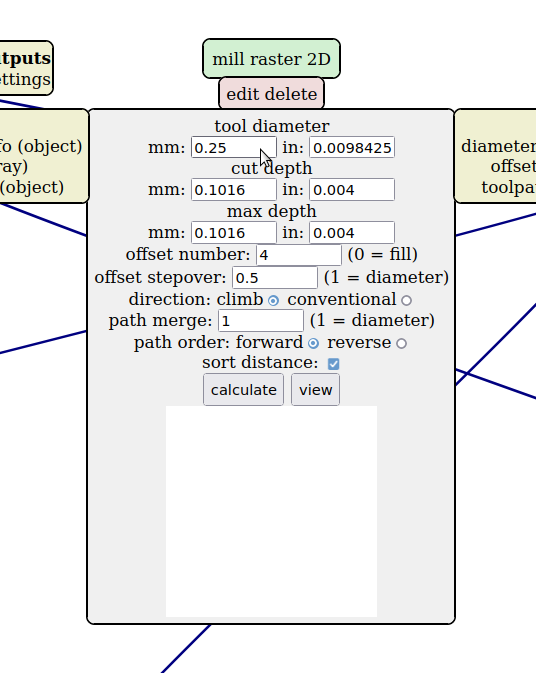 |
|---|
| Set tool diameter to 0.25 |
| 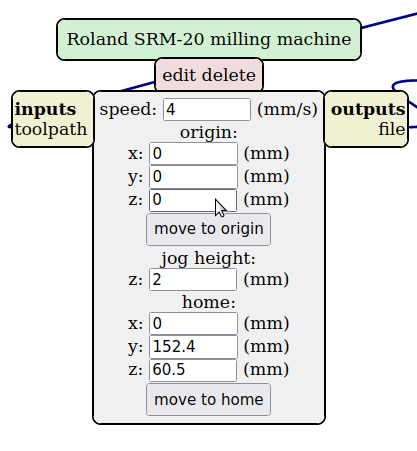 |
|---|
| Change milling machine origin to 0/0/0 |
| 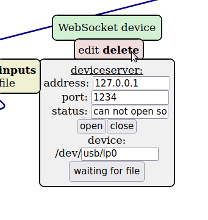 |
|---|
| Select "delete" |
Delete "WebSocket device" module because we don't have network connection on our milling machine. We create "save file" module as a replacement.
| 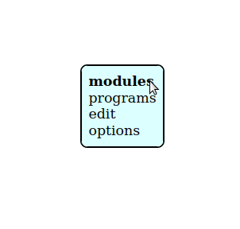 |
|---|
| Select "modules" |
| 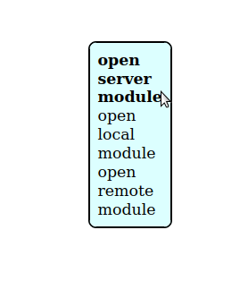 |
|---|
| Select "open server module" |
| 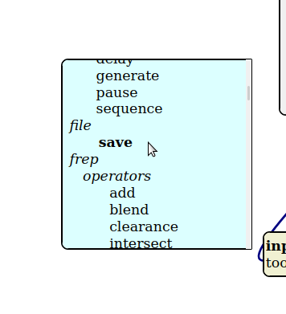 |
|---|
| Select "file->save" |
| 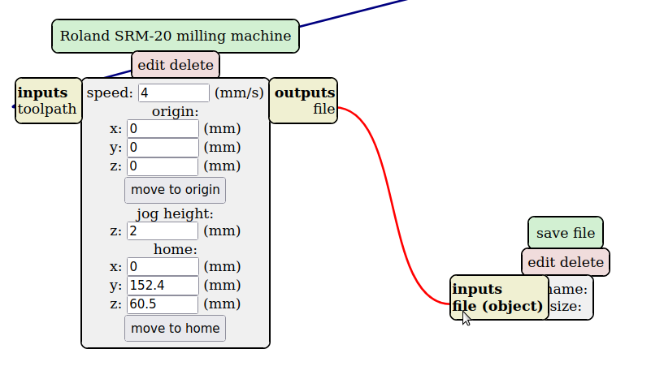 |
|---|
| Add connection between modules. Red line is new connection. |
| 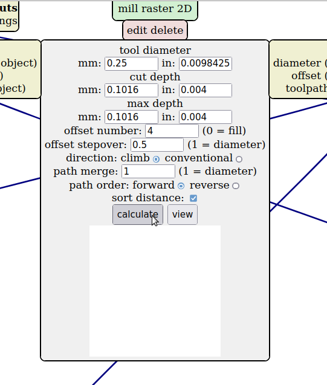 |
|---|
| Select "calculate" |
| 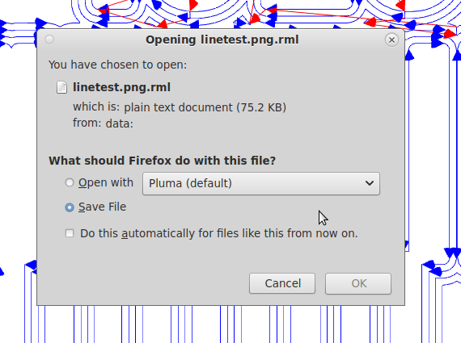 |
|---|
| Save Roland SRM-20 toolpath file for traces |
| 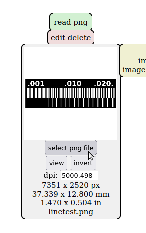 |
|---|
| Select "select png file" |
| 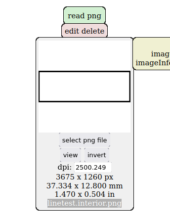 |
|---|
| "linetest.interior.png" file selected from computer |
| 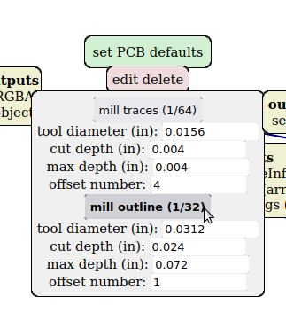 |
|---|
| select "mill outline (1/32)" |
 |
|---|
| Set tool diameter to 1 |
| 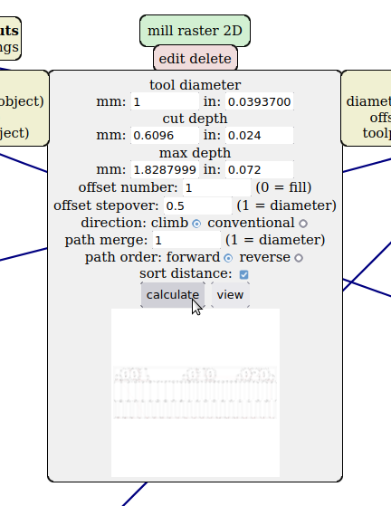 |
|---|
| Select "calculate" |
| 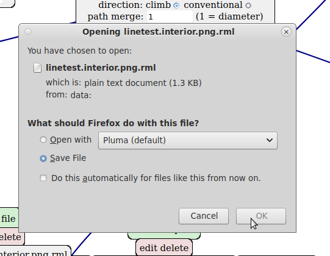 |
|---|
| Save Roland SRM-20 toolpath file for outline |
| 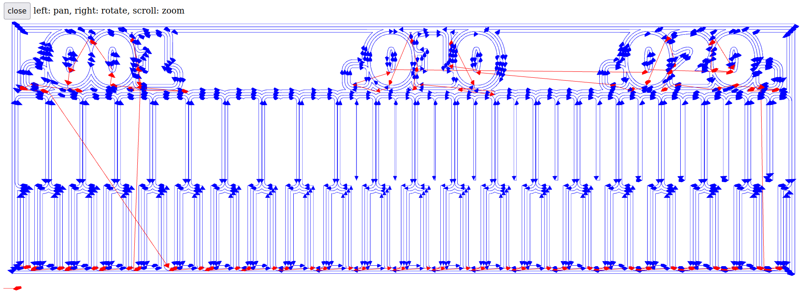 |
|---|
| Generated toolpath for traces (linetest.png) |
| 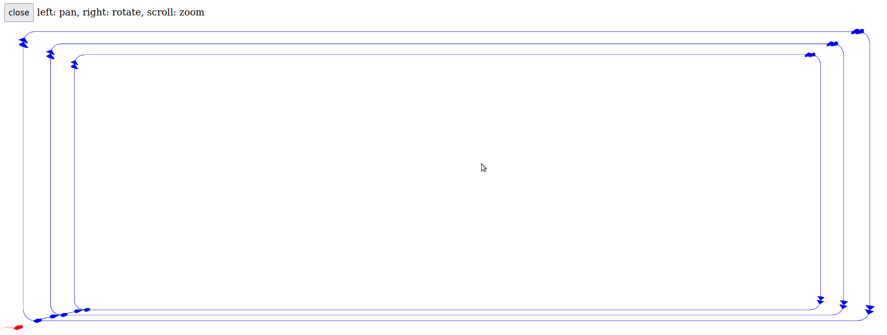 |
|---|
| Generated toolpath for outline (linetest.interior.png) |
 |
|---|
| Fab Academy linetest.png used on that exercise |
| Fab Academy linetest.interior.png used on that exercise |
 |
|---|
| fig |
6 modules you generally need to touch when using Mods
"read png"
Basic input file operations, self explaining?
"set PCB defaults"
This module is just for select suitable default values for "mill raster 2D" module. Two choices, one for traces and one for outlines.
"mill raster 2D"
That is most important module. Default settings are pretty good, change if needed. Our lab has for example smaller drill for traces than default and larger drill for outlines than default. Change accordingly. Our PCB was FR-1 which is something like 1.6mm substrate and 0.035mm copper or so. Default values fit very well for those PCB thickness no need to adjust even slightly off.
Our lab re-uses LPKF ProtoMat PCB machine milling bits for SRM-20 PCB milling. Especially tracing drill is different as it is V-shaped 0.2mm-0.5mm drill. For more depth you cut the more wide trace will be. I used 0.25mm value for that bit with all the other settings default, which produces very nice cut.
Offset number setting means how many rounds drill is run in parallel, bigger the number the larger area is skinned from the the copper. Different values can be tested and result seen from "view toolpath" module. You may compensate smaller drill by adding more offset, but V-shaped drill bits are not aimed for that so better to remove extra copper from more suitable drill bit.
"Roland SRM-20 milling machine"
Module for positioning. origin should be zeroed as we set origin from machine in order to avoid "double" origin. Those defaults are for situation SRM-20 is connected and controlled directly by that module, but on out case toolpath is transferred on file.
"jog height" is value how much drill is moved top of Z-origin when transferred (not cut) to different position. Default 2mm is OK, I would say do not decrease.
"home" is position where head is moved after the job is finished.
"save file"
Saves our toolpath to file.
"view toolpath" module
Open and see how your calculated toolpath looks.
Research
https://gitlab.fabcloud.org/pub/programmers/programmer-swd-d11c
Testing UPDI programmer
For testing build UPDI programmer I need some device to flash. For that I loaned hello.t412.echo board from lab. I already had
https://gitlab.fabcloud.org/pub/programmers/programmer-updi-d11c
Testing UPDI programmer
For testing build UPDI programmer I need some device to flash. For that I loaned hello.t412.echo board from lab. I already had Arduino installed on my workstation as I earlier did some esp8266 projects, so I needed only install ATtiny412 specific development files to Arduino.
hello.t412.echo board is tiny PCB having ATtiny412 chip with two communication interfaces:
- UPDI for programming the chip
- UART for serial receive and transmit
Board had initially some slightly tweaked software, it output was Finnish language. I replaced it with "standard" one.
Microchip ATtiny412 support for Arduino
I added megaTinyCore using Arduino Boards Manager as descripted in installation instructions: https://github.com/SpenceKonde/megaTinyCore/blob/master/Installation.md
Add additional board manager:
- "File->Preferences"
- "Additional Boards Manager URLS:" (http://drazzy.com/package_drazzy.com_index.json)
Then open Boards Manager and install megaTinyCore:
- "Tools->Board->Boards Manager"
- install "megaTinyCore"
After that Arduino should have support for ATtiny412 and many other chips from that family.
Compiling hello.t412.echo.ino test program
I downloaded hello.t412.echo.ino and opened it to Arduino. http://academy.cba.mit.edu/classes/embedded_programming/t412/hello.t412.echo.ino
Select correct environment for that ATtiny412 chip.
- "Tools->Board->megaTinyCore->ATtiny412/402/212/202"
- "Tools->Chip->ATtiny412"
- "Sketch->Compile/Verify"
Sketch uses 1918 bytes (46%) of program storage space. Maximum is 4096 bytes.
Global variables use 91 bytes (35%) of dynamic memory, leaving 165 bytes for local variables. Maximum is 256 bytes.
It compiled correctly.
Transfer hello.t412.echo program to chip
Connect UPDI, Vcc and GND wires between programmer and device carefully and correctly. Plug UPDI programmer to computer. On my case, Linux, it appears as /dev/ttyACM0 serial device.
UPDI programmer pinout: https://gitlab.fabcloud.org/pub/programmers/programmer-updi-d11c
hello.t412.echo pinout: http://academy.cba.mit.edu/classes/embedded_programming/t412/hello.t412.echo.png
- "Tools->Port" (/dev/ttyACM0)
- "Tools->Programmer->SerialUPDI - SLOW: 57600 baud, any platform, any voltage, any adapter."
- "Sketch->Upload"
SerialUPDI
UPDI programming for Arduino using a serial adapter
Based on pymcuprog, with significant modifications
By Quentin Bolsee and Spence Konde
Version 1.2.3 - Jan 2022
Using serial port /dev/ttyACM0 at 57600 baud.
Target: attiny412
Set fuses: ['2:0x02', '6:0x04', '8:0x00']
Action: write
File: /tmp/arduino_build_547357/hello.t412.echo.ino.hex
Pinging device...
Ping response: 1E9223
Setting fuse 0x2=0x2
Writing literal values...
Verifying literal values...
Action took 0.02s
Setting fuse 0x6=0x4
Writing literal values...
Verifying literal values...
Action took 0.02s
Setting fuse 0x8=0x0
Writing literal values...
Verifying literal values...
Action took 0.02s
Finished writing fuses.
Chip/Bulk erase,
Memory type eeprom is conditionally erased (depending upon EESAVE fuse setting)
Memory type flash is always erased
Memory type lockbits is always erased
...
Erased.
Action took 0.01s
Writing from hex file...
Writing flash...
[==================================================] 30/30
Action took 0.65s
Verifying...
[==================================================] 4/4
Verify successful. Data in flash matches data in specified hex-file
Action took 0.42s
Chip firmware is uploaded successfully, which is is enough to confirm our UPDI programmer works correctly.
Test hello.t412.echo board
I think this is out of scope of that week, but here it is briefly.
I used USB UART board to test hello.t412.echo board. Connect TX<->RX and RX<->TX lines between USB UART and hello.t412.echo board. Also connect 5V Vcc and GND from USB UART to hello.t412.echo board. Disable hw flow control from USB UART (not sure if it is needed, I didn't test).
Plug USB cable to computer and open terminal with following settings and test to type some letters.
[crope@localhost hello.t412.echo]$ python -m serial.tools.miniterm /dev/ttyUSB0 115200
--- Miniterm on /dev/ttyUSB0 115200,8,N,1 ---
--- Quit: Ctrl+] | Menu: Ctrl+T | Help: Ctrl+T followed by Ctrl+H ---
hello.t412.echo: you typed "H"
hello.t412.echo: you typed "He"
hello.t412.echo: you typed "Hel"
hello.t412.echo: you typed "Hell"
hello.t412.echo: you typed "Hello"
hello.t412.echo: you typed "Hello "
hello.t412.echo: you typed "Hello F"
hello.t412.echo: you typed "Hello Fa"
hello.t412.echo: you typed "Hello Fab"
hello.t412.echo: you typed "Hello Fab "
hello.t412.echo: you typed "Hello Fab L"
hello.t412.echo: you typed "Hello Fab La"
hello.t412.echo: you typed "Hello Fab Lab"
hello.t412.echo: you typed "Hello Fab Lab "
hello.t412.echo: you typed "Hello Fab Lab O"
hello.t412.echo: you typed "Hello Fab Lab Ou"
hello.t412.echo: you typed "Hello Fab Lab Oul"
hello.t412.echo: you typed "Hello Fab Lab Oulu"
--- exit ---
[crope@localhost hello.t412.echo]$